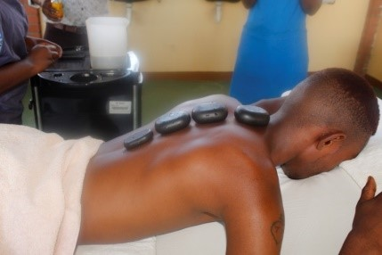

RAVOS Technical College
Programmes
1. Early Childhood Education
Early childhood education (ECE) referred to education programmes and strategies geared towards children from birth to eighty years. ECE caters for the total development of the child that is social, cognitive, emotional and physical. It focusses on equipping candidates with skills to develop the child in a holistic manner. The programme will provide candidates not only with appreciation of theoretical issues involved in the study of ECE but also a range of practical skills which will enhance their value to the education of young children.
ECE Modules
- Classroom Management and Guidance
- Safety Health, Hygiene and Nutrition
- Monitoring and Assessing Children’s Development
- School, Family and Community Partnership
- Supervised Teaching Practice
- Domains of Child Development
- Curriculum Development
- Play and Creativity in Early Childhood
- Communication & Study Skills
Duration: 1 year
Carreer options are as follows:
- Preschool Teachers
- Preschool aides
- Childcare assistants
- Childcare directors
- Trained babysitters
- Family Day care operators
Programme Directors

Ms Tshireletso Moraope
Lecturer
Tel: +267 540 3361, +267 7407 4641
E-mail: ece@ravos.co.bw

Ms T Magwati
Lecturer
Tel: +267 540 3361, +267 75 523 574
E-mail: ece@ravos.co.bw
2. Information and Technology
Information Technology (IT) is the umbrella of all computing disciplines (computer science, information systems and software engineering). It focuses on the practical part of computer science, where it provides and produces high-quality software solutions.
The Information Technology program offered by the department of Information Technology is one of the first programs that has been carefully crafted and designed to fulfill the needs of research as well as industry and local markets in Botswana. The IT department which provides in-depth knowledge, and research in the field of Information Technology.
Graduates from the programs are expected to contribute effectively to the national plan of IT in the nation and fill the need in the IT industry for specialized personal in IT solutions design, IT solutions development, IT solutions evaluation, and research in all areas of IT including Data-Centered solutions, Network solutions, Security and Information Assurance, Web technologies, Human Computer Interaction, and Multimedia.
IT Modules
- Computer Awareness
- Computer Applications
- Basics of Computer Networking
- Computer Practical
Duration: 1 year
Carreer options are as follows:
- Computer Trainer
- Computer network technician
- Computer programmer
Programme Directors

Mr T Ntshabang
Head of IT Programme
Tel: +267 540 3361, +267 7494 8757
E-mail: ict@ravos.co.bw

Ms P Maruping
Assistant IT Trainer
Tel: +267 540 3361, +267 7385 4201
E-mail: ict@ravos.co.bw
3. Business Management
Business Management is a dynamic study that focuses on the institutions that satisfy customer's needs, which includes public and private organizations.
The Certificate in Business Management is designed to provide participants with necessary balance of knowledge and skills required to play a role in business organizations. It gives participants a broad introduction to the many aspects of business in the international environment.
Business Management Modules
The modules under this programme are as follows:
- Principles of Management
- Principles of Economics
- Business Communication
- Quatitative Methods
- Introduction to Accounting
- Marketing
The duration of the programme is 1 year.
Career options under this programme are the following:
- Accountant
- Accounts Clerk
- Financial Planner
- Bookkeeper Business Manager
Programme Manager

Mr Shelton Tlogo Setabo
Head of Programme
Tel: +267 540 3361, +267 7487 9268
E-mail: production@ravos.co.bw
4. Livestock Management
This programme deals with management of farm animals eg, Cattle, Goats, sheep, Rabbits etc. It involves attending to housing, feeding, breeding and overall health of animals with other aspects of management.
Livestock farming Modules
- Small Stock farming
- Broiler Production
- Beef Production
- Layers
- Agri_Business Management
- Beekeeping
Carreer options are as follows:
- Borehole Operator
- Farm Worker
- Inoculator
Programme Directors

Mr K Monate
Assistant Instructor
Tel: +267 540 3361
E-mail: production@ravos.co.bw
Mr A.S Moseki
Head of Section
Tel: +267 540 3361
E-mail: production@ravos.co.bw
Mr F Akanyang
Farm Worker
Tel: +267 540 3361
E-mail: production@ravos.co.bw
5. Occupational Health and Safety
The increasing awareness for Organizations to comply with relevant occupational Health and Safety acts and regulations and international laws has intensified the need amd essentials of training in the field. The purpose of this course is therefore to equip employers and employees with necessary skills to identify hazards, assess the significance of hazards, implement control measures and to protect the workforce from adverse health safety conditions generated from the workplace environment.
RAVOS technical college offers health and safety management course at certificate levl for a period of a year with three months industrial attachment. OCH is a local syllabus accredited by Botswana Qualifications Authority. The College plans to offer this course at diploma level soon. This course is for employees, employers and public officers at supervisory level and or industries involved in OHS.
OHS Modules
- Accident investigation and Prevention
- Safety practices and procedures
- Occupational Health
- Health administration and management
- Computer Skills
- Communication and study skills
Carreer options are as follows:
- Health and safety represantative
- Assistant environmental inspector
- Assistant health and safety officer
- Assistant risk controller
Programme Directors

Mr T. Tsiripane
Lecturer
Tel: +267 540 3361, +267 724 883 40
E-mail: ohs@ravos.co.bw
6. Refridgeration and AirConditioning
Refrigeration and Air-conditioning involves installation, maintaining and repairs of refrigeration and cooling systems and also involves problem-solving skills, basic math skills, the ability to read and interpret specifications, and the ability to work with power tools and sophisticated technology.
REF Modules
- Communication & Study Skills
- Introduction to Fundamental Computer Applications
- Technical Maths, Refrigeration and Air-conditioning Technology
- Technical Drawing
- Refrigeration and Air-conditioning Practicals
- Research methodologies
Duration: 1 year
Carreer options are as follows:
- Field service Technician
- Service Manager
- Field service supervisor
- Field Installer
- Project Manager
- Lab Technician
- Controls Technician
- Educational administrator
- Sales Manager
Programme Directors

Mr Kereeditse
Head of Section
Tel: +267 540 3361, +267 74 238 746
E-mail: ref_air@ravos.co.bw
7. Dress Making
This subject deals with the outward appearance of individuals. It involves design and fitting of dresses, blouses and other outer garments of individuals.
Fashion Design
In Fashion Design competiotions are often set for colleges by fashion and textile manufacturers in different subject areas such as fur, leather and other fabrics. It is therefore important that the standards and fashion trends are followed to keep up with changing trends.
Dress Making modules
- Trade technology
- Technical drawing
- Technical mathematics
- Bookkeeping
- Practical
Assessment
It is necessary to produce drawings, drafting patterns to the final design and produce the final project/garment.
The duration of the course is 1 year.
Carreer Options are:
- Dressmaking production manager
- Fashion Designer
- Lecturer
Programme Director

Mrs Elizabeth Sekhutshwane
Senior Lecturer
Tel: +267 540 3361, +267 776 563 97
E-mail: production@ravos.co.bw
8. Salon and Beauty Therapy
Hair dressing and basic beauty therapy is a short course designed to provide both pre-employment for secondary school leavers and anyone who aspire to develop training and skills needed by the industry.
Salon and Beauty Therapy modules
Salon Techniques
- Hair Shampooing and Conditioning
- Hair Chemical processing
- Weaving and Bonding
Beauty Therapy
- Makeup Application
- Facial Treatments
- Manicure/Pedicure
- Scalp and Body massage
Salon Management and Safety
- Salon accounting and records keeping
- Stock Control
- Ordering and Purchasing
- Workshop Environment
- protective Clothing
There are many carreer prospects that one can easily start to operate from the comfort of their homes. They include:
- Nail services/technicians
- Braiding and Weaving
- Makeup artist
- Massage therapist
Selection Criteria
The criteria for minimum entry requirements shall be inclusive and are set out as follows:
- Academic merit
- Equivalency
- Prior learning
- English language proficiency
The maximum deferment is one year for certificate and diploma courses
The following table features the courses offered and their Fees
Proudly endorsed by: